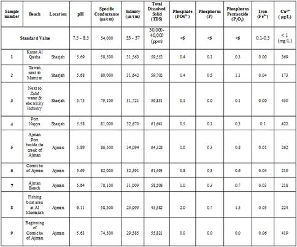
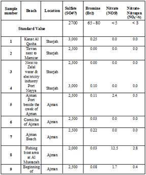

International Journal of Environmental Pollution and Remediation (IJEPR)
ISSN: 1929-2732

Volume 2 - Year 2014 - Pages 13-17
DOI: 10.11159/ijepr.2014.002
A Comparison Study of Water Quality among Different Regions of Sharjah and Ajman in the United Arab Emirates
Sabrina Chelli, Adnan Falah, Rami El Khatib
School of Environment and Health Sciences, Canadian University of Dubai,
P.O. Box 117781, 1st Interchange, Sheikh Zayed Road,
Dubai, United Arab Emirates
rami@cud.ac.ae
Abstract - A comparison study of water quality among different regions of two major cities in UAE, Sharjah and Ajman, was undertaken. Numerous water samples were collected from five regions of Ajman and four regions of Sharjah near human activity areas, entertainment areas and industrial areas. The samples were taken approximately 10-20 meters from the shoreline, where the depth was 0.5-1.0 meter. Various tests were conducted to identify the levels of inorganic substances and physico-chemical parameters to determine if they were within an acceptable range for living organisms. Based on the analyzed data, the pH was relatively acidic, where it ranged between 5 and 6. Salinity average was 30,886 µs/cm. Total dissolved solids' (TDS) average was around 58,275 mg/L, and the specific conductance average was about 75,356 µs/cm. Many other inorganic substances involving PO43-, P, P2O5, Fe3+, Cu2+, SO42-, Br-, NO3-, and NO3- as nitrogen, were also analysed to determine the impact of human activity on water quality. Some of the data collected for such parameters have showed low concentrations which is an indicator for desirable level of pollution.
Keywords: Water quality, pH, TDS, physico-chemical parameters, Sharjah, Ajman, UAE
© Copyright 2015 Authors - This is an Open Access article published under the Creative Commons Attribution License terms. Unrestricted use, distribution, and reproduction in any medium are permitted, provided the original work is properly cited.
Date Received: 2013-11-14
Date Accepted: 2014-02-11
Date Published: 2014-02-24
1. Introduction
Water is a crucial compound for humanity [1, 2]. However, Dubai's hot and arid climate prevents us from having readily available natural fresh water with rain only few days in a month per year. It is then imperative for the UAE to find a way around this knowing that they have one of the highest water footprints ("the average resident's 550 litres a day for drinking and washing are more than triple the world average") [3] yet have little fresh water available. With today's advanced technology, there are a few methods available to increase the supply of fresh water, either from sea water or from underground aquifers. Desalination and reverse osmosis are two ways to address this issue [4]. However there are some limitations to those methods. Reverse osmosis requires high pressure which is very expensive. Desalination is also costly because the pumps require a lot of power and energy. Jebel Ali is known to have one of the largest desalination industries which also harm the environment by draining sea water from oceans and by pumping it back in, often too concentrated in salts and other inorganic species.
UAE has significantly changed in the last ten years due to the construction of buildings, artificial islands, chemical industries and port activities [4]. Furthermore, these activities have negatively impacted the natural environment, particularly the water. In this report, the effect of the surrounding environment on the water quality in several industrial, human activity and entertainment areas in Sharjah and Ajman will be investigated and discussed.
Nine water samples were collected and analyzed from several locations in Sharjah and Ajman, UAE. They were subjected to water analysis to determine the concentration of inorganic substances such as Fe2+, Cu²⁺, PO₄³⁻, P and P₂O₅ and physico-chemical parameters like pH, TDS (total dissolved solids), EC (electrical conductivity) and salinity [5].
2. Materials and Methods
2.1. Chemicals and Instruments
The analysis of water samples was done using the HI 83200 Multiparameter Bench Photometer and the reagents from "HANA Spectroquant kit" [4].
Every water sample was filtered at first using filter paper. The photometer can measure certain concentration range (0-2000 mg/L), in case of sea water, high concentration substances. Thus in order to determine the exact concentration the water sample should be diluted first; and then analyzed in which 99mL of distilled water was added to 1mL of the water sample and was then multiplied by 100.
The tests conducted involved determining the concentration of inorganic substances such as Fe3+, Cu²⁺, PO₄³⁻, P and P₂O₅ and also physico-chemical tests which involved electrical conductivity, pH, TDS (total dissolved solids) and salinity [4]. All water samples were analyzed at the same time after collection and were stored under dry conditions at 25˚C. The samples were collected about 10-20 meters from the shore at depth of 0.5-1 meters.
3. Results and Discussion
The water samples studied were taken fromSharjah as shown in table 1 and fromAjman as shown in table 2.
Table 1. Beaches analyzed from Sharjah and their surrounding environment.
|
Number of the Beach |
Name of Beach |
City |
Surrounding Environment |
|
1 |
Kanat Al Qasha |
Sharjah |
Entertainment area, jet ski activity, next to coral reefs. |
|
2 |
Tawan next to Mamzar |
Sharjah |
Entertainment area, jet ski activity, next to coral reefs. |
|
3 |
Golden Gate Hotel beach area |
Sharjah |
Industrial area, next to Zulal water bottling & electricity industry |
|
4 |
Nayya |
Sharjah |
Human activity area, port |
Table 2. Beaches analyzed from Ajman and their surrounding environment.
|
Number of the beach |
Name of Beach |
City |
Surrounding Environment |
|
5 |
Port Ajman |
Ajman |
Human activity area, port |
|
6 |
Corniche |
Ajman |
Entertainment area, beach club |
|
7 |
Ajman beach |
Ajman |
Entertainment area, Dana Beach Hotel |
|
8 |
Al Muntazah |
Ajman |
Human activity area, fishing port |
|
9 |
Beginning of Corniche |
Ajman |
Entertainment area, beach |
3.1. Characterization of Sea Water
The phosphate concentrations were found to be within normal range (as they are all low) in all beaches with the exception of Al Muntazah and Tawan next to Mamzar (Table 3) as their phosphate concentrations were slightly higher than the other beaches; and the industry in Sharjah with the beginning of the Corniche of Ajman which had a very low presence of phosphate. The beginning of the Corniche of Ajman indicated negative tests for all three phosphate groups representing a low pollution level. Considering its surroundings of hardly any human activity, it isn't surprising that there are no indications of pollution. However, the fact that phosphate isn't present in water signifies that it is the limiting factor for algal growth. Low concentrations in the water next to the industry in Sharjah were unexpected as contaminated water often has high phosphate levels. Since it was in an acceptable range, the industry seems to manage well since the phosphate levels were low.
Al Muntazah and Tawan however, indicated higher levels of phosphate compared to the other beaches showing a slightly polluted area. There could have been many factors causing that such as "decaying plant matter, fertilizers, mineral treatment chemicals, contaminated well water, acid rain, contamination with soil, ground water runoff, bird droppings, bather wastes, urine and sweat" [6]. Nevertheless in the case of Al Muntazah, the most apparent factors are due to human activity practiced in presence of a fishing port. Moreover, when the sample was collected, the water had an orangey colour to it which already gave a first impression of pollution.
The copper range in water (Table 3) should not exceed more than 1 mg/L [7] as it may cause vomiting and liver damage. In general, it is not seen as a health hazard if in a low concentration. The results below for all 9 beaches indicate low concentrations of copper under 1 mg/L.
Iron concentrations should not exceed 0.1-0.3mg/L [8] in drinkable water. If exceeded, it may cause gastrointestinal problems, heart diseases and sometimes cancer. Seawater should normally contain less than 1.5 to 2 mg/L [8] of iron. The results for iron (Table 3) are all under the abnormal range with the exception of Port Nayya (sample 4), water next to Zulal water & electricity industry (sample 3) and the beginning of the Corniche of Ajman (sample 9) which are a little bit higher than the others. The reason why iron was slightly higher in Port Nayya could be due to the commercial shipping of goods and the activity may lead to iron corrosion in water. Since sample 3 was collected next to an industry in Sharjah, it was anticipated that the iron level would be slightly higher than the others. Lastly, sample 9 wasn't expected to have a level of iron as high as sample 3 and 4. But since it was an entertainment area linked to Jet Ski activity, the saltwater could have caused the jet skis to corrode which could be the justification for this cause.
The pH range of the seawater should be 7.5 to 8.5 [9, 10]. The pH of all the water samples (Table 3) is between 5 and 6 which is slightly acidic. However, beaches 1 and 2 have a slightly more acidic pH than the other beaches. In general, low pH levels are caused by dissolved carbon dioxide and acid generated salts [4]. This can be potentially harmful to the marine life, particularly those that are adapted to live in water of neutral pH.
The normal range of salinity is about 33 to 37 ppt [11, 12]. The data collected (Table 3) respects the range of salinity except for the fishing boat area at Al Muntazah and the beginning of Corniche of Ajman with lower results of 23 and 29 ppt. This means that the sum of solid materials in the water is lower than the normal range. Low salinity may slowly kill corals and other marine creatures present in the water which are sensitive to salinity concentration changes [5]. This may be a point to consider in a long term aspect.
The total dissolved solids' normal seawater range should be 30,000-40,000 ppm [13]. All the beaches have an extremely high range of TDS as they all exceed 40,000 ppm (Table 3). These high concentrations of dissolved solids show that the human activity is dominant in the UAE (construction sites, chemical industries…). It also implies a hazard for marine life. We have noticed that the pH, salinity and the TDS ranges in most samples have shown compatible values with the exception of sample 8 which had revealed a higher pH value. This may be due to higher values of alkaline earth metals (Ca²⁺ and Mg²⁺) that were not studied in this report. The values of specific conductance [10] amongst different water samples have shown variations that can be due to the fact that some ions may exist in two different forms as either free or complex.
Seawater contains about 2700 mg/L of Sulfate [14]. Most of the beaches (Table 4) are around that range with the exception of Kanat Al Qasha in Sharjah, Port Nayya in Sharjah and the fishing boat area at Al Muntazah in Ajman. The concentration of Sulfate in seawater depends upon the discharge from the soil and the rocks present as well as the leakage of sewers, precipitation and other [8]. The concentration in Kanat Al Qasha and Port Nayya are slightly higher with a concentration of 3000 mg/L whereas the boat area in Al Muntazah is low with a concentration of 2000 mg/L. Higher concentrations of Sulfate may indicate higher levels of pollution from leakage of toxic substances or simply high rates of discharge from the soil and the rocks [4].
A normal range of Bromide in seawater is within a range of 65 mg/L to 80 mg/L [15] and a suitable range for bromine is about 70 ppm [16] which is around 69.92 mg/L. The concentration of bromine in all the beaches (Table 4) was found to be very low if not, non-existent in some cases with concentrations of 0.00-0.25 mg/L. Nitrate concentrations should not exceed 5 ppm in seawater as it could cause severe problems and toxicity in plants [8]. All beaches (Table 4) did not exceed this range with the exception of Al Muntazah in Ajman. The concentration found in this area was 12.5 mg/L which greatly exceeded the appropriate range. This high level of toxicity presents a hazard for aquatic plants and indicates a high level of pollution [4].
Table 3. Physico-Chemical analysis of the concentration of inorganic substances and properties in several areas in Ajman and Sharjah, samples 1-9 (in mg/L).
|  |
Table 4. Physico-Chemical analysis of the concentration of inorganic substances and properties in several areas in Ajman and Sharjah, samples 1-9 (in mg/L).
|  |
4. Conclusion
Human activity has a fairly important impact on the water quality as seen with a high range in phosphates in entertainment and industrial areas. Based on the analysis of the results, Port Nayya as well as water collected next to the industry in Sharjah and the beginning of the Corniche of Ajman had higher iron content due to the port activity and industrial activity leading to corrosion and other negative impacts. The electrical conductivity and the salinity were found to be within an acceptable range which is a good indication for low pollution levels except for the fishing boat area where salinity ranges were little bit lower than normal which may be a point to consider in a long term aspect. However, the high TDS levels do imply dominant human activities increasing the risk of future high pollution levels if practiced over a long period of time. Many other inorganic substances involving PO43-, P, P2O5, Cu2+, SO42-, Br-, NO3- and NO3- as nitrogen, were also analysed to determine the impact of human activity on water quality. Even though the seawaters are not highly polluted with the analyzed parameters, the pH is relatively low compared to the normal range. This implies that the acidity levels caused by dissolved carbon dioxide or acid generated salts are relatively high. This would be something interesting to look at in the near future because acidic water conditions may represent a threat to marine life. In order to draw a clear conclusion on how surroundings affect the water quality, further studies may be needed to look at the interactions between the different physico-chemical parameters and the biotic factors (marine organisms and plants).
Acknowledgment
The authors would like to acknowledge Ms. Zena Muhtaseb for her help and support throughout this study.
References
[1] R.H. Friis "Essentials of Environmental Health" Sudbury, USA: Jones & Bartlett learning, 2012. View Article
[2] G.T. Miller and S. Spoolman "Environmental Science" Mississauga, Canada: Thomson, 2008. View Article
[3] M. Kwong, "You're looking at 140 litres of water" [Online], 2010. View Article
[4] R. El Khatib, A. Falah, G. Tavakoli, C. D'cruz and J. Pereira "A Study of Water Quality Near to a Coral Reef Site in the Region of Dubai, United Arab Emirates" Canadian Journal on Chemical Engineering & Technology ,vol. 3, no.3, April 2012. View Article
[5] A. Falah, R. El Khatib, N. Yahfoufi "Water Quality Survey of Arabian Peninsula in Regions of Dubai in the United Arab Emirates." Canadian Journal on Chemical Engineering & Technology, vol. 3, no. 1, January 2012. View Article
[6] Aqualab Systems Phosphate Problemsin Pools [Online], 2011. View Article
[7] J. D. Fitzgerald. "Safety guidelines for copper in water." The American Journal of Clinical Nutrition, 1998. View Article
[8] H. H. Hammud, "Quality and Pollution Studies of Water in Lebanon", Ultra Science - Dimension of Pollution, 1, 19, 2001.
[9] G. Anderson "Seawater Composition" [Online], 2008. View Article
[10] E. Wenner "Water Quality" [Online], 2012. View Article
[11] R. Nave "Seawater" [Online], 2000. View Article
[12] Apps Laboratories "Salinity - what do those figures mean?" [Online], 2014. View Article
[13] Water Quality Association "Water Classifications" [Online], 2012 View Article
[14] World Health Organization "Sulfate in Drinking-water" 2004. View Article
[15] A. Kabbani, H.H. Hammud, H. Itani "Spring Water of Lebanese Bekaa Valley". Ultra Science - Dimension of Pollution, 1, 48, 2001.
[16] Daat Solutions of ICL Group, "Bromine" [Online]. 2013. View Article